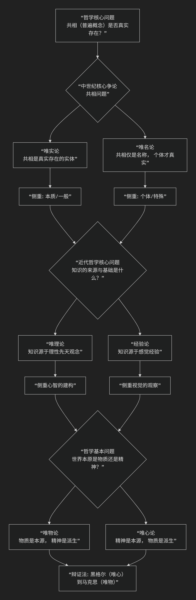

西方哲学核心骨架
几大“唯”字头的对立理论
唯物论与 唯心论、唯实论 与 唯名论、唯理论与 经验论 等几组“唯”字头的理论是西方哲学史的核心骨架，它们之间的关系错综复杂但又充满逻辑。它们并非并列关系，而是在不同哲学层面（本体论、认识论）上，围绕不同核心问题产生的对立阵营。
为了更直观地理解它们如何交织构成哲学史脉络，下图呈现了其核心演进逻辑：

以上图谱清晰展示了哲学史上三次重大转折，接下来我们详细解析每一组关系。
第一战场：本体论层面的争论（世界是什么？）
这个层面讨论“存在”本身的基本构成。
1. 唯物论 vs. 唯心论
这是最根本的划分，即 “哲学的基本问题” ：世界的本原是物质还是精神？
唯物论：物质是第一性的，精神/意识是物质（如大脑）的产物。世界是客观存在的物质世界。
唯心论：精神是第一性的，物质世界是精神、意识或理念的产物或显现。
关系：根本对立。它们提供了关于世界本质的两种最基础的、互不相容的答案。
2. 唯实论 vs. 唯名论
这是中世纪哲学的核心争论，可以看作是唯物与唯心争论在 “共相问题” 上的一个具体表现。它问的是：普遍概念（如“人类”、“红色”）是否真实存在？
唯实论（Realism，也译“实在论”）：共相是真实存在的实体。“人类”这个理念是独立于苏格拉底、柏拉图等具体个人而客观存在的本质。这通常倾向于唯心论立场（认为抽象理念是根本）。
唯名论（Nominalism）：共相仅仅是名称、语词或概念，并非客观实体。真实存在的只有一个个具体的、个别的事物（如苏格拉底这个人）。这通常倾向于唯物论立场（强调具体物质个体是根本）。
关系：唯实论与唯名论之争，是唯物与唯心斗争在中世纪的一种特殊形式。
第二战场：认识论层面的争论（我们如何认识世界？）
这个层面讨论知识的来源、范围和可靠性。
3. 唯理论 vs. 经验论
这是近代哲学（17-18世纪） 的核心争论。在默认了外部世界存在（实在论）的前提下，争论知识的来源。
唯理论：强调理性是知识的主要来源。认为人类心灵中有一些先天固有的观念（如数学公理、逻辑法则），通过理性推理可以获得普遍必然的真知识。代表人物：笛卡尔、斯宾诺莎、莱布尼茨。
倾向：在本体论上往往偏向唯心论，因为“先天观念”是精神性的。
经验论：强调感觉经验是知识的唯一来源。人心如一块“白板”，所有知识都从后天经验中来。普遍必然的知识值得怀疑。代表人物：洛克、贝克莱、休谟。
倾向：在本体论上可能偏向唯物论（如洛克），但也可能通向唯心论（如贝克莱的“存在就是被感知”）。
关系：唯理论 vs. 经验论，是在认识论领域的争论，与唯物 vs. 唯心的本体论争论是不同维度的问题，但常有关联。
核心关系总结
理论 |
核心问题 |
答案倾向 |
所属层面 |
|---|---|---|---|
唯物论 vs. 唯心论 |
世界本原是什么？ |
物质 / 精神 |
本体论（形而上学） |
唯实论 vs. 唯名论 |
普遍概念是否真实存在？ |
是（共相实在） / 否（个别实在） |
本体论（中世纪焦点） |
唯理论 vs. 经验论 |
知识的根本来源是什么？ |
理性 / 经验 |
认识论（知识论） |
错综复杂的交叉关系
一个哲学家可以同时持有不同层面的立场。例如：
笛卡尔：在认识论上是唯理论者（我思故我在）；在本体论上是二元论者（心物皆实体），但更偏向唯心。
贝克莱：在认识论上是极端的经验论者（所有知识来自感觉）；在本体论上却是极端的唯心论者（物是观念的集合）。
马克思：在本体论上是唯物论者；在认识论上则批判了抽象唯理论，强调实践是认识的基础。
唯名论是现代思想的重要源头。它强调个别、具体、经验，直接影响了后来的经验论和唯物主义。
德国古典哲学的调和：康德试图调和唯理论与经验论，提出“先天综合判断”，认为知识需要感性质料和理性形式相结合。黑格尔则以“绝对精神”的辩证法，将唯物与唯心、唯理与经验的内在矛盾纳入一个宏大的历史发展体系中。
总而言之
这几组“唯”字头理论，构成了西方哲学思想发展的辩证脉络：
中世纪围绕 “共相” 展开的唯实论与唯名论之争。
近代转向 “知识” 来源的唯理论与经验论之争。
而所有这些争论，都或显或隐地建立在如何回答 “世界本原” 这一最基本的唯物与唯心的立场之上。
理解它们的关系，就像拿到了一张哲学地图，能帮助你在浩瀚的思想史中清晰地定位每位哲学家的坐标。
现当代西方哲学核心问题
用唯心和唯物主义的传统二元框架来归类现当代西方哲学（约20世纪至今） 存在显著局限，甚至可能产生误导。这主要是因为：
1. 哲学问题的转型
现当代哲学发生了“语言转向”“生存论转向”等根本性变革，其核心问题已不再是传统形而上学讨论的“精神与物质何者为第一性”。更多关注的是：
语言的意义、使用与界限（分析哲学、现象学）。
人类存在、自由与实践（存在主义、马克思主义、实用主义）。
知识与权力的关系（后现代主义、批判理论）。
科学方法论与实在论（科学哲学）。
心灵、认知与人工智能（心灵哲学、认知科学）。
2. 传统框架的局限
唯物主义在现当代更多以自然主义、物理主义、科学实在论等形式出现，但内部争论激烈（如还原论 vs 非还原论）。
唯心主义作为传统体系已基本退场，但其问题意识以新形式延续（如观念论、建构主义、现象学中对意识结构的分析）。
二元对立的超越：许多重要哲学家明确拒绝或解构了这种对立，例如：
海德格尔：拒绝“主体-客体”二分，转向“存在”问题。
维特根斯坦：认为唯心和唯物之争是语言误用的产物。
实用主义（如杜威、罗蒂）：将问题转化为“什么工具对实践有效”。
后结构主义（如德里达）：批判二元对立本身是形而上学的产物。
3. 现当代哲学的主要版图
更有效的划分方式是依据问题与方法，两大主流脉络是：
分析哲学传统：关注语言、逻辑、科学知识与心灵，倾向于自然主义立场，但内部包含实在论与反实在论等复杂争议。
欧陆哲学传统：关注存在、历史、社会、权力与解释，更多从人类经验和社会结构出发，但并非简单回归唯心论。
4. 例外与复杂性
某些哲学流派可被有限追溯：
辩证唯物主义是马克思主义传统的一部分，但当代西方马克思主义更关注文化批判与异化问题。
一些科学实在论者可被视作现代唯物论的变体，但面临反实在论的挑战。
观念论在德国古典哲学后式微，但在精神哲学、数学哲学中仍有回声。
但更多思想家处于灰色地带，例如：
梅洛-庞蒂的身体现象学，既非唯心也非传统唯物。
塞尔的生物自然主义，尝试调和意识与物理世界。
德勒兹的唯物主义强调欲望与生成，与传统唯物论完全不同。
结论
用唯心和唯物二分法归类现当代西方哲学，如同用“冷兵器”应对“信息化战争”——它难以捕捉哲学问题的实质脉络与前沿进展。更恰当的方式是：
理解具体哲学家的核心问题与方法。
关注其在本体论、认识论上的具体立场（如实在论/反实在论、自然主义/解释学）。
在思想史脉络中定位其批判对象与创新。
这一框架在思想史教学或特定批判性分析中仍有参考价值，但作为研究范式已不足以涵盖现当代哲学的复杂性与多元性。
西方哲学史二元对立结构
这种对立既是思想演进的动力，也构成了哲学史的核心脉络。我们可以从历史延续性、对应关系及思想光谱三个层面分析这一现象：
一、历史延续性：二元对立的四次范式转换
本体论之争（古希腊-中世纪） 柏拉图的理念论（唯心论原型）与亚里士多德的实体论（唯物论雏形）奠定了形而上学的基本对立框架。中世纪唯实论者（如托马斯·阿奎那）继承柏拉图传统，认为共相具有实在性；唯名论者（如奥卡姆）则追随亚里士多德，主张共相仅是名称。这种对立本质上是关于存在本质的争论在神学语境下的延续。
认识论之争（近代） 经验论（洛克、休谟）与唯理论（笛卡尔、莱布尼茨）的分歧可追溯至古希腊赫拉克利特与巴门尼德的对立。经验论强调感官经验为知识来源（”白板说”），唯理论则主张先天理性能力（”我思故我在”）。这种对立在康德试图调和时达到高峰，但仍未根本消解。
方法论之争（19-20世纪） 科学主义（逻辑实证主义）与人文主义（存在主义）的对立是前两种范式在科学革命后的延伸。分析哲学继承经验论传统，强调语言分析与逻辑实证（如维特根斯坦）；存在主义则延续唯心论脉络，关注个体生存境遇（如萨特）。马克思的实践哲学试图超越这种对立，提出”意识形态批判”作为新的分析框架。
价值论之争（当代） 现实主义与理想主义的冲突体现在政治哲学领域（如罗尔斯与诺齐克之争），本质上是柏拉图《理想国》中正义观辩论的现代回响。现象学（胡塞尔）与解构主义（德里达）的对抗则延续了本质主义与反本质主义的古老命题。
二、对应关系的建立与解构
纵向谱系对应
唯心论谱系：柏拉图→奥古斯丁→笛卡尔→黑格尔→存在主义
唯物论谱系：亚里士多德→托马斯·阿奎那→洛克→马克思→分析哲学 这种对应在认识论层面表现为：唯理论/先天观念论 vs 经验论/后天建构论；在本体论层面表现为理念实在论 vs 物质实体论。
横向结构关联现代哲学的对立可视为古代命题的”折叠展开”：
分析哲学-存在主义对立 ≈ 经验论-唯理论对立 ≈ 唯名论-唯实论对立
科学主义-人文主义对立 ≈ 自然哲学-伦理学对立 ≈ 逻各斯-神话对立 这种结构通过曼海姆的”意识形态分析”可被理解为不同历史条件下认知框架的再生产。
解构视角 后现代哲学（如福柯、德里达）揭示这种对立本质上是”逻各斯中心主义”的产物。海德格尔指出，二元对立源于西方形而上学将存在者与存在混淆的传统。现象学的”意向性”概念（胡塞尔）和”存在先于本质”命题（萨特）试图突破这种框架。
三、思想光谱的坐标定位
本体论轴（实在性维度）
极左端：极端唯名论（概念纯属符号）
极右端：极端唯实论（概念独立存在）
中间态：温和唯名论（概念源于经验抽象）与概念论（概念具有心理实在性）
认识论轴（知识来源维度）
经验论极：实证主义（维也纳学派）
唯理论极：先验观念论（康德）
调和点：批判实在论（波普尔）、实用主义（杜威）
方法论轴（哲学功能维度）
科学主义极：逻辑实证主义（卡尔纳普）
人文主义极：存在现象学（梅洛-庞蒂）
中介点：解释学（伽达默尔）、批判理论（哈贝马斯）
价值论轴（实践导向维度）
现实主义极：功利主义（边沁）
理想主义极：义务论（康德）
综合态：正义论（罗尔斯）、能力路径（森）
结语：对立中的辩证运动
西方哲学史的本质，正如黑格尔辩证法揭示的，是通过正题-反题-合题的螺旋上升实现思想演进。当代哲学的趋势（如具身认知、新唯物主义）正在尝试超越传统二元框架，但思想光谱的基本结构依然深刻影响着哲学话语的生成方式。这种持续的对立与调和，恰是哲学保持生命力的源泉。
西方哲学史中的一个深层结构：理性之光与存在之火之间的长久张力
一、总体脉络：哲学史的“双轨张力”
纵览西方哲学史，从古希腊到当代，可以看出两条持续交织的思想脉络：
对象化、理性化的脉络： 追求可普遍化、可证明、可逻辑化的世界解释。 → 强调“真理独立于人而存在”，世界是理性秩序的反映。 → 从柏拉图—亚里士多德到笛卡尔、康德，再到分析哲学、科学实在论。
主观化、存在化的脉络： 追求人之意义、经验与自由的世界理解。 → 强调“真理依附于人的存在方式”，世界是生命的展开。 → 从赫拉克利特、苏格拉底，到基尔凯郭尔、尼采、海德格尔，再到存在主义与人本主义。
这两条脉络不断交错：一方代表“世界的理性结构”，另一方代表“人的存在意义”。 哲学史便是一场在“理性—存在”之间的永恒震荡。
二、主要思想对立的谱系对应
下面以一种“谱系学”的方式，展示这些思想的内在关联。每一对对立都不是孤立的，而是前者向理性、客体、普遍，后者向经验、主体、个体。
历史阶段 |
理性—客体方向 |
存在—主体方向 |
对应关系说明 |
|---|---|---|---|
古希腊 |
柏拉图（理念论）亚里士多德（形而上学） |
赫拉克利特（生成论）苏格拉底（伦理自觉） |
理念 vs 经验；普遍 vs 个别 |
中世纪 |
唯实论（Realism，理念实在） |
唯名论（Nominalism，理念为名） |
普遍实在性争论 |
近代 |
笛卡尔、斯宾诺莎：理性主义（Rationalism） |
洛克、休谟：经验论（Empiricism） |
先天理性 vs 感性经验 |
德国古典哲学 |
康德—黑格尔：理性综合、理念展开 |
费尔巴哈—尼采：人性回归、生命哲学 |
理性系统 vs 生命存在 |
20世纪 |
分析哲学、逻辑实证主义、科学主义 |
存在主义、人本主义、解释学 |
语言逻辑 vs 存在意义 |
当代 |
实在论（Realism）、自然主义、AI哲学 |
建构主义（Constructivism）、现象学、人文主义 |
科学可知论 vs 人文自反性 |
可以看出，每个时代的核心问题，都以新的形式重演“世界独立性 vs 意识参与性”的矛盾。
三、思想光谱的整体结构
我们可以把整个西方思想的大体光谱想象为一条从“客体理性”到“主体存在”的连续带：
科学实在论 ←—— 理性主义 ←—— 唯物论 ←—— 分析哲学 ←—— 实证主义
│
│ 中间张力区：康德、黑格尔（理性与经验的辩证综合）
│
人文主义 ——→ 存在主义 ——→ 现象学 ——→ 解释学 ——→ 后现代主义
左端（理性极）：追求世界的客观秩序、逻辑与因果，信奉科学可通达真理。 右端（存在极）：追求人类经验的意义、价值与自由，怀疑理性可穷尽真实。 两端互为依存：理性若无存在之根，则成冷漠机器；存在若无理性之光，则陷于混乱主观。
四、这些对立的哲学意义
这些对立并非简单的“二选一”，而是一种文明自我反思的动力结构。 哲学史中每一次思想的“革命”，往往都是某一端对另一端的反动与补偿：
笛卡尔理性主义 → 激起 休谟怀疑论 → 导致 康德综合；
黑格尔理念史观 → 激起 费尔巴哈与尼采的人本主义；
逻辑实证主义的科学主义 → 激起 海德格尔、萨特的存在主义反叛；
当代AI与认知科学的自然主义热潮 → 同时引发 后人文主义与现象学新生。
哲学的进步并非终止于某一极端的胜利，而是靠这种对抗性的循环不断逼近“存在与真理的更深对话”。
五、结语：光谱之外的第三向度
在21世纪的思考中，越来越多哲学家试图超越这两极的二元结构，进入“关系哲学”或“生成哲学”的维度，如德勒兹、怀特海、拉图尔等。他们不再问“世界在理性中存在，还是在意识中存在”，而问：
“存在是否本身就是关系与生成的过程？”
这意味着未来的哲学可能不再是“唯物—唯心”的对抗，而是一种“关系—生成”的新范式。
西方思想谱系图
这张“西方思想谱系图”我会尽量清晰地以横向思想光谱 + 纵向时间轴的方式呈现，既体现出历史演进，又标出哲学家的思想位置。下面是ASCII字符版的简化图（若你希望，我也可随后生成图像版）。
理性与存在的双轨光谱（从古希腊至当代）
时间 ↓
┆ ←——————————————— 理性 / 客体 / 普遍 ————————————————→ 存在 / 主体 / 个体 ┆
┆ 科学主义 实证主义 理性主义 唯物论 — 康德辩证区 — 现象学 存在主义 人文主义 ┆
═══════════════════════════════════════════════════════════════════════════════════════════════════════
古希腊 柏拉图(理念论)——→亚里士多德(形而上学)
│ │
│ └——赫拉克利特(生成)／苏格拉底(伦理自觉)
中世纪 托马斯·阿奎那(神学理性化)
│
├→ 唯实论(理念实在：奥卡姆等)
└→ 唯名论(概念为名：司各脱)
近代 笛卡尔 ———→ 斯宾诺莎 —→ 莱布尼茨
│ │
│ └→ 经验论方向：洛克 —→ 休谟
│
└→ 康德(先验综合) —→ 黑格尔(理念辩证法)
│
├→ 费尔巴哈(人本自然化)
└→ 尼采(生命哲学、意志主义)
19世纪 马克思(历史唯物主义)
│
├→ 实证主义：孔德 —→ 逻辑实证主义(维也纳学派)
└→ 反思线：叔本华、克尔凯郭尔(存在先于理性)
20世纪 分析哲学线：弗雷格→罗素→维特根斯坦→奎因→丹尼特→AI哲学
│
│——→ 科学实在论、自然主义、语言哲学
│
└→ 存在主义线：海德格尔→萨特→梅洛-庞蒂→加缪
│
├→ 解释学：伽达默尔→利科
├→ 现象学：胡塞尔→列维纳斯
└→ 批判理论：马尔库塞→哈贝马斯
当代 分析科学主义 ←———> 现象学人文主义
│ │
│—— 实在论：普特南、麦克道尔、拉图尔
│—— 自然主义：丹尼特、皮克尔、丘奇兰德
│
└—— 生成与关系哲学：德勒兹、怀特海、斯蒂格勒、哈曼(OOO)
↓
【未来可能的趋向：理性与存在的整合性哲学】
→ 关系本体论、生成论、后人类思想、生态哲学
读图说明
左侧（理性极）：追求普遍、逻辑、科学的真理。代表：柏拉图、笛卡尔、康德、分析哲学。
右侧（存在极）：追求人、生命、经验、自由的意义。代表：赫拉克利特、尼采、海德格尔、萨特。
中间地带（康德—黑格尔区）：尝试理性与经验、客体与主体的辩证综合。
下方趋势线：当代哲学正从二元对立走向“生成—关系”视野，试图突破理性与存在的分裂。